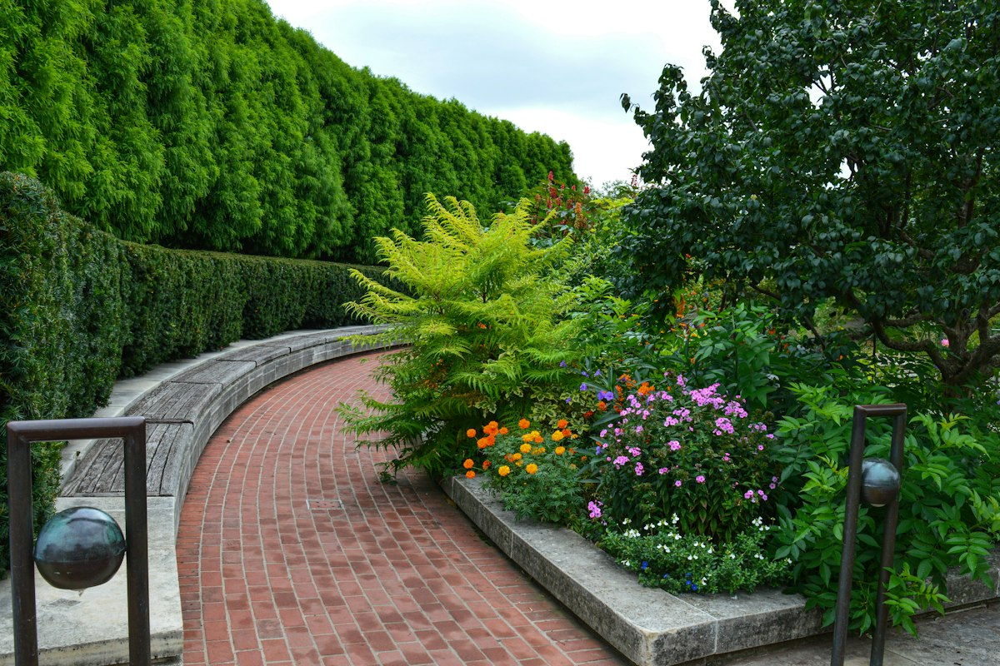
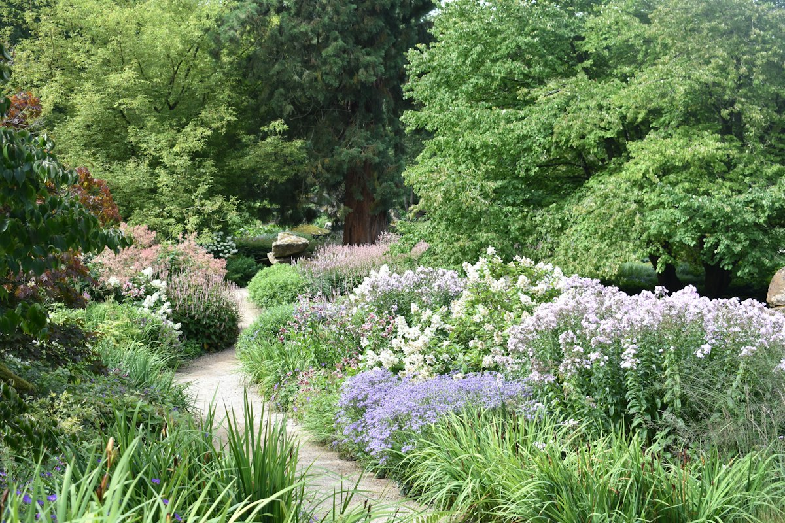
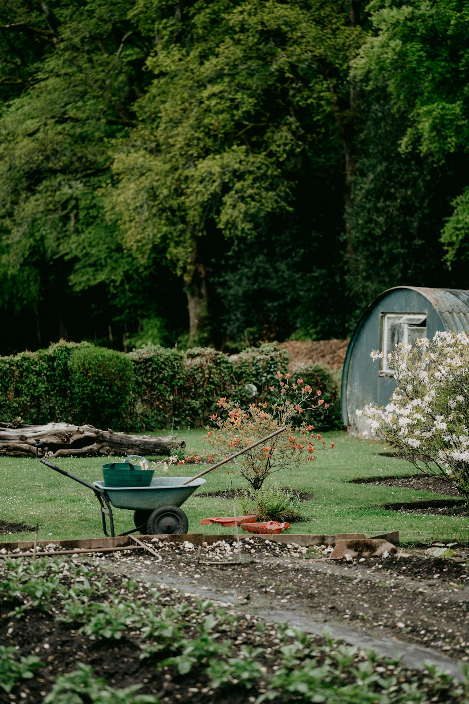

01
Gartenplanung
Wir hören zu und schauen Ihren Garten an. Dann entsteht ein Plan, der zu Ihnen und zum Ort passt.

Planung u. Pflege · Zürich Höngg
Pawi-Gartenbau plant und pflegt Gärten in Zürich. Persönlich und mit Blick fürs Detail.
Leistungen

Wir hören zu und schauen Ihren Garten an. Dann entsteht ein Plan, der zu Ihnen und zum Ort passt.

Wir kümmern uns regelmässig um Ihren Garten. Sie geniessen ihn, wir halten ihn in Form.
So läuft es ab Vorschlag
Sie schildern kurz, was Sie sich wünschen.
Wir schauen den Garten gemeinsam an und besprechen alles.
Sie erhalten eine klare Offerte. Dann legen wir los.
Über den Betrieb
Pawi-Gartenbau ist ein Gartenbaubetrieb in Zürich Höngg. Der Betrieb bietet Planung und Pflege an.
Sie haben einen Garten, einen Balkon oder einen Umschwung? Rufen Sie an oder schreiben Sie uns. Wir besprechen Ihr Anliegen persönlich.
Das Gartenjahr
Beete vorbereiten, Rasen pflegen, Stauden teilen und neu pflanzen.
Giessen, Hecken schneiden, Unkraut im Zaum halten.
Laub räumen, Zwiebeln setzen, Sträucher schneiden.
Planen, Bäume auslichten, Neues für das nächste Jahr vorbereiten.
Kontakt
Am einfachsten per Telefon oder E-Mail.